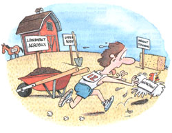

LAST LAUGH
Did city life and country diet kill Elvis? The rural/urban debate continues.
No one can deny that city living is bad for the body and hard on the mind, or that life in the country is hard on the body but good for the soul. In a city you can live well, even luxuriously; if your soul gets in the way, lose its number. But in the country, I submit you have a better shot at a long and healthy life. To prove this hypothesis, let us briefly compare the two life-styles and specifically, the disparities in diet, exercise, stress levels, and toxin cleansing.
Diet: A typical city breakfast is one piece of dry toast, half a grapefruit, juice, a bowl of cornflakes with skim milk, and one cup of decaffeinated coffee. Aside from quiche, eggs don't appear on the menu very often; city people who care about their health avoid eggs because of their cholesterol. So the typical country breakfast - two fresh, brown eggs easy-over with a slab of country ham and a side of waffles drenched in syrup and butter - would seem to be the serving of a death warrant for the city dweller; three cups of strong coffee with real cream would just about sign it. It was combining a country diet with a city lifestyle that killed Elvis.
Out here, we seldom breakfast on cereal in a bay window like those (city-based) actors in bathrobes who have misplaced their spoons, because most sane country people would prefer real food to a bowl of sweetened kibble. Granola is a city food. Carbo loading was invented in the country, where calories burn off fast, which leads me to...
Exercise: In the city, you sit perfectly still in a chair during breakfast, scanning a newspaper to stay abreast of the murder, mayhem, scandals, scams, swindles, and stock market collapses, all the jangling data to prime you for another day in the concrete jungle. Then you sit perfectly still in a car or train seat until you arrive at the office, where you sit perfectly still in a chair and maybe take an electronic bath in video-terminal rays for eight hours. At the end of the day, you go to a health club and make a little sweat.
But experts agree that running, deep breathing, and/or hard physical labor is the best way to work off stress and stay fit. No problem. Getting out of bed, you observe that the chickens are in the garden or the horse has picked the gate latch and is bolting for the hills. Fifteen minutes of chasing chickens is equivalent to an hour of jogging, but catching a horse makes the Boston Marathon seem like a stroll.
By this time your blood is circulating pretty well, and it's time to get to work. A spade is the ultimate implement for exercise in the country. Few health clubs have shovels in the weight room, but this tool is unsurpassed for working the entire upper body, biceps, triceps, neck, shoulders, quads, pecs, and abs, not to mention the thighs, calves, ankles, and toes. A day spent digging in the garden and pushing a wheelbarrow full of dirt or manure simply cannot be compared to a day spent sitting in a chair, screaming on the phone and chewing antacid tablets.
Stress Level: No contest. See above.
Toxin Cleansing: If we pretend that air you can see is just as good as the air you can breathe, the city mouse appears to have the advantage. But, frankly, I think the major environmental toxin that affects both groups is tobacco addiction. Drive along any city street at noon, and you will see the buildings empty as smokers rush down (riding an elevator, perfectly still) from the conditioned air into the smog and bus fumes, to poison themselves even further.
Out in the country, you can use any form of tobacco anywhere you like, sucking smoke or spitting juice all day long. The entire workplace is outdoors after all; have a cigar and only your lungs will complain. But the major drawback, accessibility to supply, is also the biggest asset to your health program. When you live 10 miles from the nearest cigarette outlet, you eventually stop smoking because one time the car won't start, another time you run out of gas, and another time a cop pulls you over. The cumulative daily hassle of scoring tobacco makes you quit.
In the city, you slap an expensive patch on your neck, type furiously, and suffer in silence. Out here, you can just grit your teeth and pick up a hoe, beating the dirt and shrieking at the top of your lungs for three days, while your family hurriedly takes off to visit sick relatives in the city.
|
 |
|
|